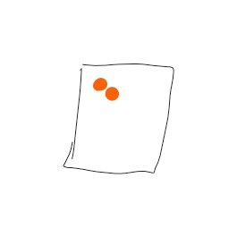
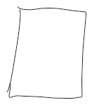

Real gases DO NOT follow the ideal gas law:
If particles have attraction, number of collisions would decrease as particles would move in groups => Pressure would increase
As IMF increase, pressure is smaller
High temperature = less IMF, less of a problem
Low temperature = high IMF, ideal gas law breaks down
{width="2.7604166666666665in" height="2.7604166666666665in"}{width="1.4791666666666667in" height="1.4791666666666667in"}{width="1.4791666666666667in" height="1.4895833333333333in"}{width="1.4791666666666667in" height="1.4791666666666667in"}{width="1.4791666666666667in" height="1.4791666666666667in"}{width="1.4791666666666667in" height="1.4791666666666667in"}{width="1.3645833333333333in" height="1.5520833333333333in"}{width="1.4791666666666667in" height="1.4895833333333333in"}{width="1.4791666666666667in" height="1.4791666666666667in"}{width="1.4895833333333333in" height="1.5in"}{width="1.4791666666666667in" height="1.4791666666666667in"}{width="1.4791666666666667in" height="1.4895833333333333in"}{width="1.4791666666666667in" height="1.4791666666666667in"}
Volume and pressure of a real gas are NOT directly proportional
If volume is decreased (or pressure is increased), size of particles will become more and more significant
Ideal gas law breaks down when volume decreased, particle size increased, pressure increased
Pressure will be greater than predicted